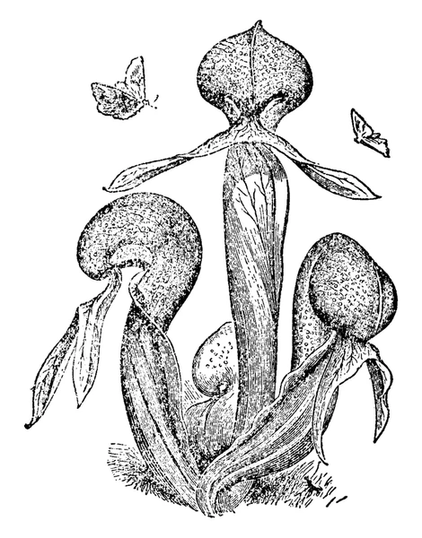
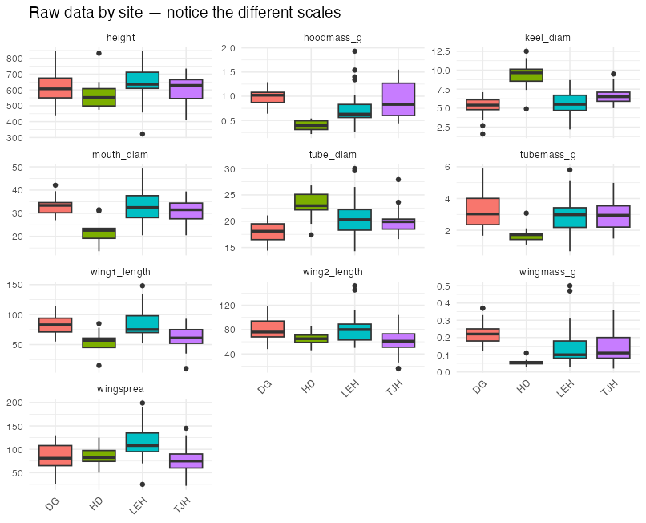
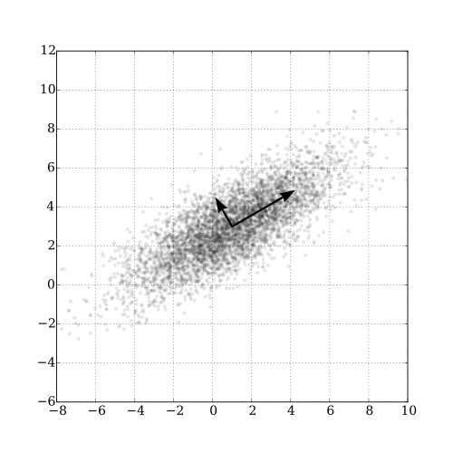
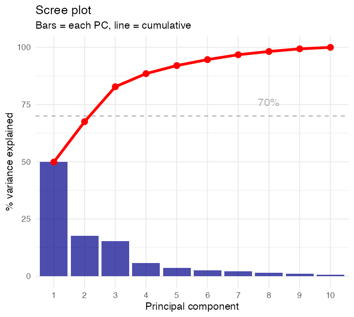
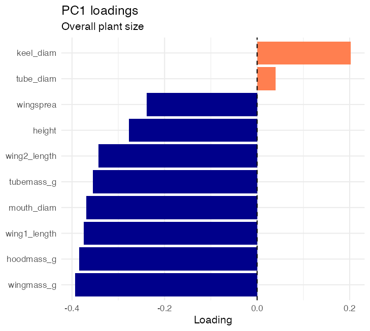
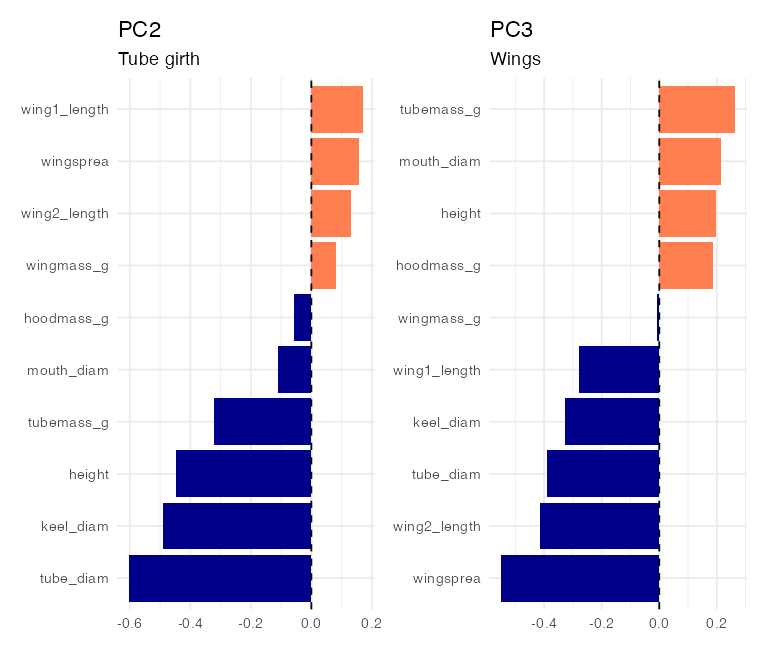
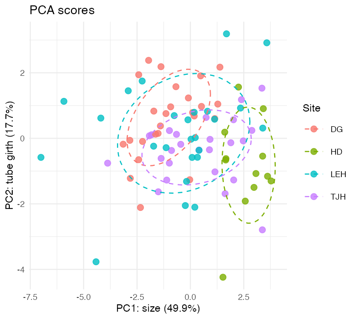
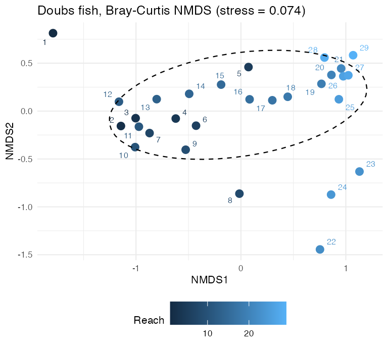

## # A tibble: 4 × 2
## site n_plants
## <chr> <int>
## 1 DG 25
## 2 HD 12
## 3 LEH 25
## 4 TJH 25Lecture: Multivariate Statistics
An introduction to multivariate data, distance, and ordination
Bill Perry
Part 1 · Why Multivariate Data?
Where We Have Been
One response variable at a time
- Everything from t-tests through ANCOVA and mixed models shared one structure:
- One response variable, y
- One or more predictors
- Partition the variance in y
- That works when the biology really is about one number — lifespan, mass, count, survival.
But ecology is rarely one number
- A plant is its whole shape: height and mouth and tube and wing and mass.
- A stream site is its whole fish community: 27 species at once.
- Running 10 separate ANOVAs on 10 traits:
- inflates the family-wise error rate,
- and still never tells you how the traits go together.
Introduction to Multivariate Analysis
What multivariate methods do
- Take many correlated variables measured on the same objects and ask:
- Which objects resemble which?
- What are the main axes of variation?
- Do groups differ in their overall multivariate makeup?
- Three jobs, in order, and this lecture is a map of all three:
- Put variables on a common footing — standardization
- Turn objects into resemblances — distance / dissimilarity
- Draw the resemblances in 2-D — ordination
Note
Gotelli & Ellison, A Primer of Ecological Statistics, Ch. 12 — The Analysis of Multivariate Data — is the core reference for this lecture.
Darlingtonia californica (cobra lily)
Our First Dataset: Darlingtonia
Cobra lily morphology
- 87 plants from 4 sites in the Siskiyou Mountains of Oregon, 10 variables each.
- Morphology (mm):
height,mouth_diam,tube_diam,keel_diam,wing1_length,wing2_length,wingsprea - Biomass (g):
hoodmass_g,tubemass_g,wingmass_g - Sites: TJH (T.J. Howell’s Fen) · DG (Day’s Gulch) · LEH (L.E. Hunter’s Fen) · HD (High Divide)
Pitcher structure showing the measured features

- All continuous, all positive, mostly correlated — the classic setting for PCA.
Our Second Dataset: Doubs River Fish
A very different kind of multivariate data
- 29 sites along the Doubs River (France), 27 fish species, abundance counts.
- Sites are ordered upstream → downstream, so there is a real environmental gradient to recover.
- The structural difference that matters:
- 52.1% of the entries are zeros.
- Species richness ranges from 1 to 26 species per site.
- Count data, shared absences, wildly different totals. This is why Euclidean distance is not always the right answer.
## # A tibble: 6 × 7
## site CHA TRU VAI LOC GAR ABL
## <dbl> <dbl> <dbl> <dbl> <dbl> <dbl> <dbl>
## 1 1 0 3 0 0 0 0
## 2 2 0 5 4 3 0 0
## 3 14 3 4 4 5 0 0
## 4 15 2 3 3 5 1 0
## 5 28 0 1 1 1 5 5
## 6 29 0 0 0 0 5 5- Site 1 holds a single species (3 brown trout).
- Site 29 holds 26.
- Nothing in a t-test or an ANOVA handles a response like this.
📥 Download the Data
📥 darlingtonia.csv 📥 DoubsSpe.csv 📥 DoubsEnv.csv
Loading both datasets
Exploring the Raw Darlingtonia Data
Always look first
- Check for outliers, examine distributions, look for patterns by site, understand the scales.
- Key observations:
- Variables measured in different units (mm vs. g)
- Height is in the hundreds; wing mass is in hundredths
- We will have to standardize before we can combine them

Part 2 · Standardization
The Problem of Different Scales
Why standardization matters
- Variables with larger numbers dominate any distance you compute.
- In this data:
## # A tibble: 1 × 3
## sd_height sd_wingmass ratio
## <dbl> <dbl> <dbl>
## 1 101. 0.102 986.- Height varies about 990× more than wing mass does. In a raw Euclidean distance, wing mass contributes essentially nothing.
- That is an accident of units, not biology.
Standardization in Pictures

When not to standardize
- Same units, and the differences in spread are real biology.
- Ten lengths all in mm, where “this trait varies more” is the finding — standardizing would erase it.
- Species abundance data. Standardizing each species to mean 0 turns absences into negative numbers, and most dissimilarity measures for community data are undefined for negatives.
- Community data gets transformed (square-root, Hellinger) rather than z-scored. More on that in week 15.
- The question to ask is always: do I want these variables to have equal influence?
Part 3 · Distance and Dissimilarity
Euclidean Distance Between Two Objects
How different are two plants?
- Two variables (height, mouth diameter):
- \(d_{i,j} = \sqrt{(y_{i,1} - y_{j,1})^2 + (y_{i,2} - y_{j,2})^2}\)
- p variables:
- \(d_{i,j} = \sqrt{\sum_{k=1}^{p}(y_{i,k} - y_{j,k})^2}\)
- The Pythagorean theorem, extended to as many dimensions as you have variables.
- Always compute it on standardized values — otherwise you are measuring your unit choices, not your plants.
The Dissimilarity Matrix
The hub of everything that follows
dist()returns one number for every pair of objects: an n × n dissimilarity matrix.- With 87 plants that is 3,741 pairwise distances.
- Why it matters: PCoA, NMDS, cluster analysis, PERMANOVA and ANOSIM all start from this matrix and nothing else.
- Choose the metric well and everything downstream is sensible.
- Choose it badly and no amount of clever plotting rescues you.
- Symmetric, zero on the diagonal, and that is all an ordination method ever sees.
Not All Distances Are Euclidean
Four metrics you will meet in this course
| Metric | Formula idea | Data it suits | Range |
|---|---|---|---|
| Euclidean | straight-line distance | continuous, standardized, few zeros | 0 → ∞ |
| Manhattan | sum of absolute differences | continuous, less outlier-sensitive | 0 → ∞ |
| Bray–Curtis | shared abundance / total abundance | species abundance counts | 0 → 1 |
| Jaccard | shared species / total species | presence–absence | 0 → 1 |
- Euclidean and Manhattan are metric distances — they obey the triangle inequality and can be drawn in a real coordinate space.
- Bray–Curtis and Jaccard are semi-metric dissimilarities — bounded at 1 (= “share nothing”), which is exactly what you want for communities, but which breaks the geometry PCA relies on.
The Double-Zero Problem
Why community data needs Bray–Curtis
- Doubs site 1 holds one species. Site 29 holds 26. They share nothing.
- Euclidean distance counts all the species that are absent from both sites as evidence of similarity — two barren sites look like twins.
- Ecologically that is nonsense: a species can be absent for a dozen unrelated reasons.
- Bray–Curtis ignores double zeros entirely and returns 1 for two sites with nothing in common.
- Bray–Curtis says 1.0 — maximally different, which is correct.
- Euclidean returns a number with no upper bound and no interpretation.
Choosing a Distance Metric
Decision rules
- Continuous traits, environmental variables, few zeros
- → standardize, then Euclidean
- → PCA is available to you
- Species abundances with many zeros
- → transform, then Bray–Curtis
- → PCA is not appropriate; use NMDS or PCoA
- Presence–absence
- → Jaccard (or Sørensen)
- Outlier-heavy continuous data
- → Manhattan, which does not square the differences
# same data, three metrics, first pair
round(c(
euclidean = vegdist(doubs_mat,
method = "euclidean")[1],
manhattan = vegdist(doubs_mat,
method = "manhattan")[1],
bray = vegdist(doubs_mat,
method = "bray")[1],
jaccard = vegdist(doubs_mat > 0,
method = "jaccard")[1]), 3)
## euclidean manhattan bray jaccard
## 5.385 9.000 0.600 0.667Important
The metric is a modelling decision, not a default. It encodes what you mean by “different”.
Part 4 · Ordination — The Big Picture
What Ordination Does
Many dimensions → a readable map
- You have 10 variables, so each plant is a point in 10-dimensional space. Nobody can see that.
- Ordination finds a 2-D (or 3-D) map in which objects that were close in the full space are still close on the page.
- It is a lossy summary. Some information is always thrown away; the honest report always says how much.
- The word means “putting in order” — arranging objects along axes.

Reducing 2 variables to 1 principal axis: the new axis points along the direction of greatest spread.
The Map of Ordination Methods
| Method | Starts from | Distance implied | How it solves | Where in this course |
|---|---|---|---|---|
| PCA | raw / standardized variables | Euclidean only | eigen-decomposition | Week 14 |
| PCoA | any dissimilarity matrix | whatever you chose | eigen-decomposition | named only |
| CA / DCA | species count table | chi-square | eigen-decomposition | named only |
| NMDS | any dissimilarity matrix | whatever you chose | iterative, rank-based | Week 15 |
| Cluster | any dissimilarity matrix | whatever you chose | agglomerative joining | Week 15 |
- The top block is eigenanalysis: one exact answer, axes ranked by variance explained, and you can read loadings off them.
- NMDS is different: it preserves only the rank order of the dissimilarities, solves by iteration, and has no “% variance explained” — it has stress instead.
- Cluster analysis answers a different question entirely: not “where does each object sit?” but “which objects group together?”
Eigenanalysis vs. Iteration
Eigen methods (PCA, PCoA, CA)
- Find axes by decomposing the correlation or distance structure directly.
- Give you:
- an exact, reproducible answer
- axes ordered by variance explained
- loadings: how each variable builds each axis
- But they assume the distance is Euclidean-like and the relationships are linear.
NMDS
- Does not decompose anything. It searches: shuffle the points, measure how badly the map distorts the rank order of distances, repeat.
- Gives you:
- a map honouring any dissimilarity you like
- no linearity assumption
- stress as the goodness-of-fit
- But: no loadings, axes are arbitrary, and a different random start can give a rotated answer.
Part 5 · A First Ordination — PCA
PCA in One Slide
The idea
- PCA builds new variables (components) that are:
- Linear combinations of the original variables
- Uncorrelated with each other
- Ordered by how much variance they capture
- For plant i on component k:
- \(Z_{ik} = a_{k1}Y_{i1} + a_{k2}Y_{i2} + \ldots + a_{kp}Y_{ip}\)
- \(a_{kj}\) = the loading of variable j on component k
- \(Z_{ik}\) = the score of plant i on component k
- PC1 takes as much variance as any single axis can; PC2 takes as much of what is left as possible, at right angles to PC1; and so on.
Do the Variables Even Correlate?
PCA only helps if they do
- PCA earns its keep by collapsing redundancy. If the variables are already uncorrelated, there is no redundancy to collapse and the components are just the original variables, reordered.
- Here the strongest pairs are:
## # A tibble: 4 × 2
## pair r
## <chr> <dbl>
## 1 height ~ tubemass_g 0.843
## 2 wing1_length ~ wing2_length 0.836
## 3 hoodmass_g ~ wingmass_g 0.803
## 4 wing1_length ~ wingmass_g 0.764
How Much Did We Capture?
Variance explained
## # A tibble: 6 × 4
## PC Eigenvalue Percent Cumulative
## <chr> <dbl> <dbl> <dbl>
## 1 PC1 4.99 49.9 49.9
## 2 PC2 1.77 17.7 67.5
## 3 PC3 1.53 15.3 82.8
## 4 PC4 0.573 5.7 88.5
## 5 PC5 0.352 3.5 92
## 6 PC6 0.261 2.6 94.6- PC1 = 49.9%, PC2 = 17.7%, PC3 = 15.3%
- First three together: 82.8% of all variation in 10 variables, in 3 numbers.

- The elbow after PC3 is the usual cue to stop.
Reading the Loadings
What loads where
## PC1 PC2 PC3
## height -0.278 -0.449 0.198
## mouth_diam -0.369 -0.110 0.214
## tube_diam 0.040 -0.602 -0.390
## keel_diam 0.202 -0.491 -0.328
## wing1_length -0.375 0.171 -0.280
## wing2_length -0.342 0.131 -0.415
## wingsprea -0.239 0.156 -0.549
## hoodmass_g -0.385 -0.057 0.185
## tubemass_g -0.355 -0.320 0.263
## wingmass_g -0.393 0.080 -0.007Rules of thumb
- Loadings beyond ±0.3 are worth discussing; beyond ±0.5 they dominate the axis.
- Near zero means the variable has nothing to say about that axis.
- PC1: nearly every variable loads in the same direction with similar magnitude → a general size axis.
- PC2:
tube_diamandkeel_diamstand apart from the rest → tube girth. - PC3:
wingspreaandwing2_lengthdominate → a wing axis.
⚠️ The Sign of a Component Is Arbitrary
This trips up every student once
- On this run, every PC1 loading is negative. Run the same code on a different machine, or drop one plant, and they may all come back positive.
- Both answers are equally correct. An eigenvector defines a line, and a line has no preferred end. Multiplying a whole component — loadings and scores — by −1 changes nothing:
- the variance explained is identical
- the distances between points are identical
- the biology is identical
- What you must never do is flip the loadings and not the scores.
# PC1 loadings are all negative here,
# so a HIGH PC1 score = a SMALL plant
round(pca_result$rotation[1:4, 1], 3)
## height mouth_diam tube_diam keel_diam
## -0.278 -0.369 0.040 0.202
# flipping is legal and changes nothing
flip <- -pca_result$x[, 1]
round(c(var_original = var(pca_result$x[, 1]),
var_flipped = var(flip)), 3)
## var_original var_flipped
## 4.987 4.987Always check the sign before you write a sentence such as “site X has higher PC1”. Say what it means biologically, not just which way the number went.
PC1: A Size Axis

Interpretation
- Eight of ten variables load together between about −0.24 and −0.39: height, mouth, both wings, wing spread, and all three masses.
- Only
keel_diam(0.202) andtube_diam(0.04) sit apart. - Biological meaning: bigger plants are bigger in nearly every way. PC1 is general size.
- Because the loadings are negative on this run:
- low PC1 score → large plant
- high PC1 score → small plant
PC2 and PC3: Shape Axes

What these axes are
- PC2 (17.7%) — tube girth.
tube_diam(-0.6) andkeel_diam(-0.49) dominate, with height also loading. A plant can be tall and thin-tubed, or short and fat-tubed, at any overall size. - PC3 (15.3%) — wings.
wingsprea(-0.55) andwing2_length(-0.42) dominate. How far the trap’s forked appendages spread, independent of size and tube girth. - This is PCA doing its job: three independent descriptions of shape, out of ten entangled measurements.
Scores: Putting the Plants on the Map
What scores are
- A score is one plant’s value on one component — its coordinate in the new space.
pca_result$xholds them, one row per plant.
## # A tibble: 6 × 5
## plant_id site PC1 PC2 PC3
## <int> <chr> <dbl> <dbl> <dbl>
## 1 1 TJH -1.92 0.08 1.53
## 2 2 TJH 3.35 1.53 0.75
## 3 3 TJH 0.92 -0.03 0.25
## 4 4 TJH -0.98 0.24 -0.24
## 5 5 TJH 1.15 -1.02 1.54
## 6 6 TJH -1.37 -0.61 0.85
- This is an ordination: plants ordered along interpretable axes.
The Biplot
Reading it
- Points = plants (scores). Arrows = variables (loadings).
- Arrow length = how strongly that variable is represented in this plane.
- Angle between arrows = correlation: small angle → positively correlated; 90° → uncorrelated; 180° → negatively correlated.
- A plant lying out along an arrow is high in that variable.
- HD plants sit to the right — and because PC1 loadings are negative, right means small. HD grows the smallest plants.

Part 6 · A First NMDS
Why the Fish Data Needs a Different Tool
PCA would be the wrong choice here
- 52.1% zeros, counts spanning orders of magnitude, and a strong non-linear gradient from headwater to lowland.
- PCA would impose Euclidean distance, treat shared absences as similarity, and spread the sites along a meaningless horseshoe.
- NMDS instead:
- Compute Bray–Curtis dissimilarities.
- Drop the sites onto a 2-D map at random.
- Nudge them until the rank order of map distances matches the rank order of real dissimilarities as closely as possible.
- Report stress — how badly it still fails.
The NMDS Map

What to notice
- Sites arrange along a gradient, in roughly their real upstream-to-downstream order — which NMDS was never told.
- Stress = 0.074: a good 2-D fit.
- The axes mean nothing. No variance explained, no loadings; the map can be rotated or reflected freely.
- Contrast the PCA biplot, whose axes carried percentages and whose arrows carried meaning.
Note
Week 15 takes this apart properly: the algorithm, Shepard diagrams, choosing k, and fitting environmental vectors.
Part 7 · Testing Group Differences
Do the Sites Actually Differ?
Route 1 — ANOVA on component scores
- PC scores are ordinary continuous variables, and they are uncorrelated with one another by construction — so you may put them straight into the ANOVA you already know.
- One test per component, each answering a different question about shape.
What it says
- All three components differ significantly among sites.
- Sites differ in size (PC1), in tube girth (PC2) and in wing spread (PC3) — the sites are not simply scaled versions of one another.
- The caveat: this is three tests on three axes chosen by the data themselves. It is a reasonable description, not a clean confirmatory test.
Warning
PCA was run on all 87 plants at once, ignoring site. The components are therefore not independent of the grouping you then test. Treat these p-values as exploratory.
Which Sites Differ, and How?
## site emmean SE df lower.CL upper.CL .group
## DG -1.024 0.383 83 -1.786 -0.262 a
## LEH -0.659 0.383 83 -1.421 0.103 ab
## TJH 0.423 0.383 83 -0.339 1.185 b
## HD 2.626 0.553 83 1.526 3.726 c
##
## Confidence level used: 0.95
## P value adjustment: tukey method for comparing a family of 4 estimates
## significance level used: alpha = 0.05
## NOTE: If two or more means share the same grouping symbol,
## then we cannot show them to be different.
## But we also did not show them to be the same.Reading it in biology, not in numbers
- HD sits alone in its own group with the highest PC1 score.
- PC1 loadings are negative, so a high score means a small plant: HD grows the smallest cobra lilies, and significantly so.
- DG sits at the other end — the largest plants.
- LEH and TJH overlap in the middle.
Important
This is the sign trap in action. “HD has the highest PC1” and “HD has the smallest plants” are the same sentence. Always translate before you write.
Route 2 — PERMANOVA on the Distance Matrix
Test the whole community at once
- PERMANOVA skips the ordination entirely: it partitions the dissimilarity matrix directly and gets its p-value by permuting group labels.
- One test on all 10 variables at once, instead of one per component.
adonis2(darl_scaled ~ site,
data = darlingtonia,
method = "euclidean")
## Permutation test for adonis under reduced model
## Permutation: free
## Number of permutations: 999
##
## adonis2(formula = darl_scaled ~ site, data = darlingtonia, method = "euclidean")
## Df SumOfSqs R2 F Pr(>F)
## Model 3 213.7 0.24849 9.1483 0.001 ***
## Residual 83 646.3 0.75151
## Total 86 860.0 1.00000
## ---
## Signif. codes: 0 '***' 0.001 '**' 0.01 '*' 0.05 '.' 0.1 ' ' 1Why it is worth knowing now
- No normality assumption, no multivariate normality, no equal covariance matrices.
- Works on any dissimilarity you can justify — which is why it is the natural partner to NMDS.
R2is the fraction of total dissimilarity attributable to site — read it like an ANOVA’s \(\eta^2\).
PERMANOVA’s One Real Assumption
Equal dispersion
- A significant PERMANOVA means groups differ in centroid (location) or merely in spread (dispersion).
betadisper()tells them apart.
disp <- betadisper(
vegdist(darl_scaled, method = "euclidean"),
darlingtonia$site)
anova(disp)
## Analysis of Variance Table
##
## Response: Distances
## Df Sum Sq Mean Sq F value Pr(>F)
## Groups 3 11.629 3.8762 2.743 0.04828 *
## Residuals 83 117.290 1.4131
## ---
## Signif. codes: 0 '***' 0.001 '**' 0.01 '*' 0.05 '.' 0.1 ' ' 1Reading the two together
- Significant PERMANOVA + non-significant dispersion → groups genuinely sit in different places. Clean result.
- Both significant → the location difference may be partly a spread difference. Say so.
- Here both are significant: LEH is the most variable. The site effect is strong enough (R² = 0.25) that it is not only dispersion — but an honest write-up mentions it.
Note
Week 15 develops PERMANOVA and ANOSIM in full on the Doubs data.
Part 8 · Choosing a Method and Wrapping Up
A Decision Guide
| Your data | Your question | Use |
|---|---|---|
| Continuous traits, correlated, few zeros | What are the main axes of variation? | PCA (week 14) |
| Species counts, many zeros | How do communities arrange along a gradient? | NMDS (week 15) |
| Any dissimilarity matrix | Which objects group together? | Cluster analysis (week 15) |
| Any dissimilarity matrix | Do my groups differ? | PERMANOVA / ANOSIM (week 15) |
| Continuous, multivariate normal | Do groups differ, parametrically? | MANOVA |
| Categorical variables | Same questions, categorical data | CA / MCA |
- Two questions settle almost every case:
- What kind of data is it? → fixes the distance metric.
- Description or test? → fixes ordination vs. PERMANOVA.
Assumptions and Things That Go Wrong
Check before you ordinate
- Sample size: at least 3× as many objects as variables; 50+ is comfortable. We have 87 plants and 10 variables.
- Correlation: if nothing correlates, PCA has nothing to collapse.
KMO()gives a sampling-adequacy score; ours is 0.76 (> 0.6 acceptable, > 0.8 good). - Linearity: eigen methods see only linear relationships.
- Outliers: one extreme object can define an entire component.
Common mistakes
- ❌ Not standardizing variables with different units
- ❌ Euclidean distance on species counts
- ❌ Reading meaning into a sign flip
- ❌ Interpreting components that explain 3% of the variance
- ❌ Quoting “% variance explained” for an NMDS — it has none
- ❌ Calling a significant PERMANOVA a centroid difference without checking dispersion
- ❌ Treating an exploratory ordination as a confirmatory test
Reporting Multivariate Results
Methods
“Ten morphological and biomass variables measured on 87 Darlingtonia californica plants from four sites were standardized to zero mean and unit variance and subjected to principal component analysis (
prcomp(), R 4.6.1). Components with eigenvalues > 1 were retained. Site differences were tested with PERMANOVA on Euclidean distances (vegan::adonis2(), 999 permutations), with homogeneity of multivariate dispersion checked usingbetadisper().”
Results — always state
- % variance for every component you interpret
- Loadings for the retained components
- The biological reading of each axis, sign resolved
- The test result with its dispersion check
Never report
- All 10 components when 3 are meaningful
- Loadings below |0.3|
- Raw eigenvalues in place of percentages
- Every individual score
Summary
What we did today
- Standardized 10 variables onto a common footing, because units are not biology.
- Built a dissimilarity matrix and learned that the choice of metric — Euclidean, Manhattan, Bray–Curtis, Jaccard — is the modelling decision.
- Saw the map of ordination methods and where each one lives in this course.
- Ran a PCA: 10 variables → 82.8% of the variation in three interpretable axes (size, tube girth, wings).
- Ran an NMDS on fish counts and recovered a river gradient at stress = 0.074.
What to carry forward
- The distance matrix is the hub. Everything downstream reads from it.
- Component signs are arbitrary — translate into biology before you write a sentence.
- Ordination describes; PERMANOVA tests. Do not confuse them.
- Next week: what
prcomp()is actually solving — eigenvalues, eigenvectors, and PCA in full. - Week 15: NMDS, cluster analysis, PERMANOVA and ANOSIM in full.
Readings
- Gotelli & Ellison, A Primer of Ecological Statistics, Ch. 12 — The Analysis of Multivariate Data
- Quinn & Keough, Experimental Design and Data Analysis for Biologists, Ch. 15 (introduction to multivariate analyses) and Ch. 16 (multivariate analysis of variance and discriminant analysis)
- Whitlock & Schluter does not cover multivariate methods.
Data sources
- Darlingtonia: Ellison, A.M. & Farnsworth, E.J. — cobra lily morphology from four sites in the Siskiyou Mountains, Oregon; distributed with Gotelli & Ellison.
- Doubs River fish: Verneaux, J. (1973), as distributed in Borcard, Gillet & Legendre, Numerical Ecology with R.